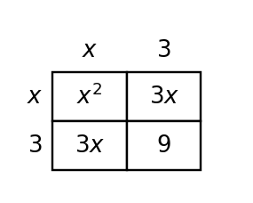
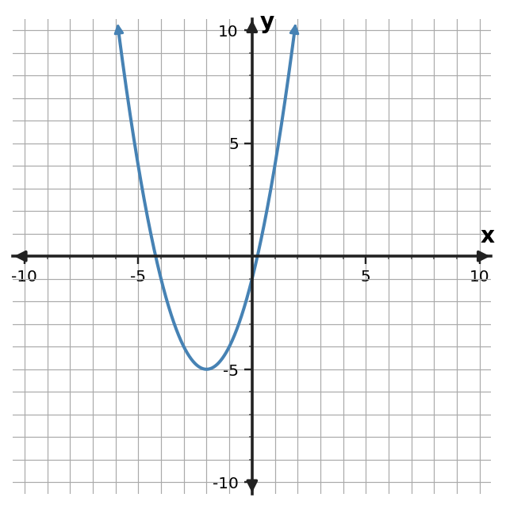
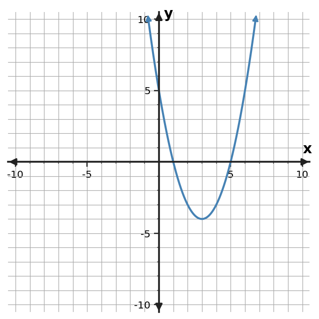

Learning Target
Students will solve quadratic equations by completing the square and connect the process to vertex form.
- I can build perfect-square trinomials by adding the needed constant term.
- I can use completing the square to solve quadratic equations and write equivalent vertex-form expressions.
- I can predict how completing the square reveals the vertex and symmetry of a quadratic function.
Vocabulary / Key Notation Preview
complete the square · perfect-square trinomial · vertex form · vertex · equivalent form
Sort the vocabulary. Put each term where it belongs based on what you know before reading.
| Know for sure | Recognize | Don't know yet |
|---|---|---|
What's to Come
DO NOT SOLVE IT YET.
Circle anything familiar, underline symbols, labels, conditions, data, or features that seem important, and write short notes about what you think may matter later.
The diagram shows a square built from one $x\times x$ region, two $x\times3$ strips, and one small square.

- Write an expression for the total area.
- Why is the total also $(x+3)^2$?
- If the corner $9$ were missing, what constant would complete the square?
Let's Get Started
Skim the section. Record what catches your attention before you read closely.
| What I noticed | |
|---|---|
| What I predict | |
| What I wonder |
CLOSE-READ AND ANNOTATE
Read in short chunks. Mark the first-use vocabulary, connect sentences to equations/tables/graphs, label important features, and jot a question or connection when something changes your thinking.
I Can 1: I can build perfect-square trinomials by adding the needed constant term.
To complete the square, we turn an expression such as $x^2+bx$ into part of a perfect-square trinomial. The key number comes from half the coefficient of $x$. If the linear coefficient is $b$, then adding $(b/2)^2$ produces $x^2+bx+(b/2)^2=(x+b/2)^2$.
The rule has a geometric meaning. The $bx$ term can be split into two equal rectangular strips, each with width $b/2$. Placing those strips beside an $x$ by $x$ square leaves one missing corner. That corner has side length $b/2$, so its area is $(b/2)^2$.
The sign of $b$ matters when the trinomial is factored, but the added constant is still a square and is therefore nonnegative. For $x^2-12x$, half of $-12$ is $-6$, and $(-6)^2=36$, giving $(x-6)^2$.
- What operation on $b$ gives the side length of the missing square?
- What constant completes $x^2-10x+\square$?
- How does the area model explain why the constant is squared?
$x^2+bx+(b/2)^2=(x+b/2)^2$
| Expression | Complete with |
|---|---|
| $x^2+10x$ | $25$ |
| $x^2-12x$ | $36$ |
Example 1: Complete a perfect square
Find the constant that makes $x^2+10x+\square$ a perfect-square trinomial, then factor it.
You Try It 1: Complete a perfect square
Find the constant that makes $x^2-12x+\square$ a perfect-square trinomial, then factor it.
Example 2: Connect an area model
Use the area model to explain why $x^2+8x+16$ is a perfect square.

You Try It 2: Connect an area model
Use the area model to write the total expression as a perfect square.

I Can 2: I can use completing the square to solve quadratic equations and write equivalent vertex-form expressions.
Completing the square can solve equations because it creates a square that can be undone with square roots. The equality must remain balanced: whatever value is added to one side of an equation must also be added to the other side.
For a function, the same idea rewrites standard form into vertex form. Instead of adding the same amount to both sides, we add and subtract the same amount within the expression so the function remains equivalent. For example, $x^2+8x+11=(x+4)^2-5$.
Once a perfect square is visible, the structure becomes easier to read. In an equation, square roots lead to the two possible branches created by plus-or-minus. In a function, the completed square reveals a horizontal shift and a vertical shift without changing the underlying quadratic relationship.
- When solving an equation, why must the same amount be added to both sides?
- What does completing the square create that makes square-root solving possible?
- How is rewriting a function different from balancing an equation?
Equation: add the same constant to both sides to preserve equality.
Function expression: add and subtract the same constant inside the expression to preserve equivalence.
Both moves create a perfect-square expression that exposes useful structure.
Example 3: Solve by completing the square
Solve $x^2+6x=7$ by completing the square.
You Try It 3: Solve by completing the square
Solve $x^2-8x=9$ by completing the square.
Example 4: Rewrite in vertex form
Rewrite $y=x^2+8x+11$ in vertex form.
You Try It 4: Rewrite in vertex form
Rewrite $y=x^2-6x+2$ in vertex form.
I Can 3: I can predict how completing the square reveals the vertex and symmetry of a quadratic function.
Vertex form has the structure $y=a(x-h)^2+k$. The vertex is $(h,k)$, and the vertical line $x=h$ is the axis of symmetry. Completing the square is powerful because it can transform standard form into a form where these features are visible immediately.
The sign of $a$ tells whether the parabola opens up or down. If $a\gt0$, the vertex is a minimum; if $a\lt0$, the vertex is a maximum. That makes vertex form especially useful in optimization models involving height, profit, area, or other quantities with a highest or lowest value.
Symmetry also explains why pairs of points occur at equal horizontal distances from the vertex. When two inputs are equally far from $h$, the squared part is the same, so the outputs match. This connection links the algebraic form directly to the shape of the graph.
- What are the vertex and axis of symmetry of $y=a(x-h)^2+k$?
- How does the sign of $a$ determine whether the vertex is a maximum or minimum?
- Why do inputs equally far from $h$ have the same output?
$y=a(x-h)^2+k$
- Vertex: $(h,k)$
- Axis of symmetry: $x=h$
- $a\gt0$: minimum at the vertex
- $a\lt0$: maximum at the vertex
Example 5: Read vertex and symmetry
Use the graph and the equivalent form $y=(x+2)^2-5$ to identify the vertex and axis of symmetry.

You Try It 5: Read vertex and symmetry
Use the graph and $y=(x-3)^2-4$ to identify the vertex and axis of symmetry.

Example 6: Interpret an optimum from vertex form
A quadratic profit model is $P(x)=-x^2+12x-20$. Rewrite it in vertex form and state the input that maximizes profit.
You Try It 6: Interpret an optimum from vertex form
A height model is $h(t)=-t^2+10t+3$. Rewrite it in vertex form and identify when the maximum occurs.
Summary
- Complete $x^2+bx$ by adding $(b/2)^2$.
- Preserve equality by making the same change to both sides of an equation.
- Completing the square can solve equations and rewrite functions in vertex form.
- Vertex form reveals the vertex, axis of symmetry, and whether the vertex is a maximum or minimum.
Common Mistakes
| Watch for | Better check |
|---|---|
| Using $b^2$ instead of $(b/2)^2$. | What should I check instead? |
| Adding a completing-square constant to only one side of an equation. | What should I check instead? |
| Forgetting that the sign inside $(x-h)^2$ is opposite the vertex's x-coordinate. | What should I check instead? |
| Identifying a vertex without checking whether it is a maximum or minimum. | What should I check instead? |